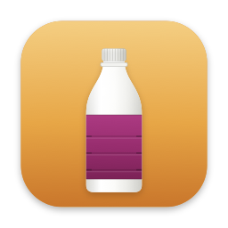

MacColiA native macOS app for Colima — a Docker Desktop-style GUI for containers, images, volumes, and workflows, right in your menu bar.
Free & open source (MIT) · macOS 14+ · Apple Silicon & Intel · Signed & notarized
Start, stop, and restart Colima with live status. Configure CPUs, memory, disk, and the runtime — docker, containerd, or incus.
List, run, start/stop, open a shell, and watch live CPU/memory sparklines. Click a row for its logs, with an opt-in live tail.
Group containers into named lists per project, with bulk start/stop/restart. Lists survive container recreation.
Pull and remove images, create volumes with per-volume disk usage, manage networks — and reclaim space with one-click Clean Up.
Save shell-command sequences as one-click tiles with live per-step output. Chain workflows together and run them straight from the menu bar.
Swift 6 / SwiftUI, lives in the menu bar, and polling backs off when you're not looking. Press ⌘F to filter any panel.
Installs the app and keeps it updated with brew upgrade.
brew tap jun-jin/maccoli brew trust jun-jin/maccoli brew install --cask maccoli
Grab the notarized DMG, open it, and drag MacColi into Applications. Gatekeeper opens it without warnings.
Download MacColi.dmgRequires Colima and the Docker CLI (brew install colima docker) — or use the app's built-in “Install Colima…” button.